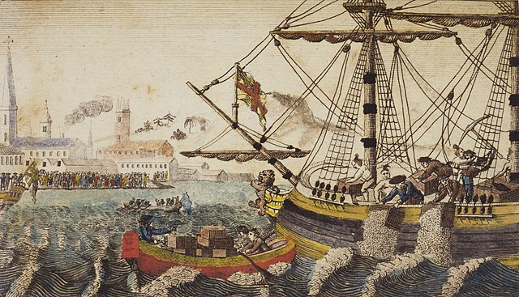

The American Revolutionary War - A Journey to Independence
The American Revolutionary War, also known as the American War of Independence, was a pivotal event in American history that took place between 1775 and 1783. It was a war fought between the American colonists and Great Britain, which eventually led to the birth of the United States of America. Let's explore this exciting and transformative period through fun facts, timelines, and important historical figures! The American Revolutionary War was a remarkable period in history, where brave men and women fought for their independence, paving the way for the birth of a new nation built on principles of freedom and democracy. Remembering these important events and figures helps us appreciate the sacrifices made by our ancestors to create the United States of America, a land of opportunity and liberty.
Timeline
1765:The British Parliament passes the Stamp Act, a tax on printed materials, leading to widespread protests in the American colonies.
1775:The war begins with the Battles of Lexington and Concord, as American militiamen clash with British troops.
1776:The Continental Congress adopts the Declaration of Independence on July 4th, officially declaring America's desire for independence.
1777:The British suffer a significant defeat at the Battle of Saratoga, convincing France to join the American cause as an ally.
1781:American and French forces, led by General George Washington, defeat the British at the decisive Battle of Yorktown, leading to the end of the war.
Three Kingdoms Period (220-280 CE):Marked by the division of China into three rival kingdoms, as depicted in the famous novel "Romance of the Three Kingdoms."
1783:The Treaty of Paris is signed, officially recognizing the independence of the United States.
Fun Facts
The Boston Tea Party: In 1773, angry American colonists, disguised as Native Americans, dumped British tea into the Boston Harbor to protest against unfair taxes imposed by the British government.
Sybil Ludington's Midnight Ride: At the age of 16, Sybil Ludington rode over 40 miles on horseback to warn American militia of a British attack, similar to Paul Revere's famous ride.
Benjamin Franklin and Electricity: Benjamin Franklin, one of America's Founding Fathers, conducted experiments with lightning and a kite to prove that lightning was a form of electricity.
The Declaration of Independence: Thomas Jefferson drafted the Declaration of Independence in 1776, stating that all people have the right to "life, liberty, and the pursuit of happiness."
Important Historical Figures:
George Washington He served as the Commander-in-Chief of the Continental Army and later became the first President of the United States.
Thomas Jefferson: Known for his brilliant writing, he authored the Declaration of Independence and later became the third President.
Abigail Adams:The wife of John Adams, she was an advocate for women's rights and equality during and after the war.
John Paul Jones:An American naval officer who became a hero for his victories at sea against the British navy.